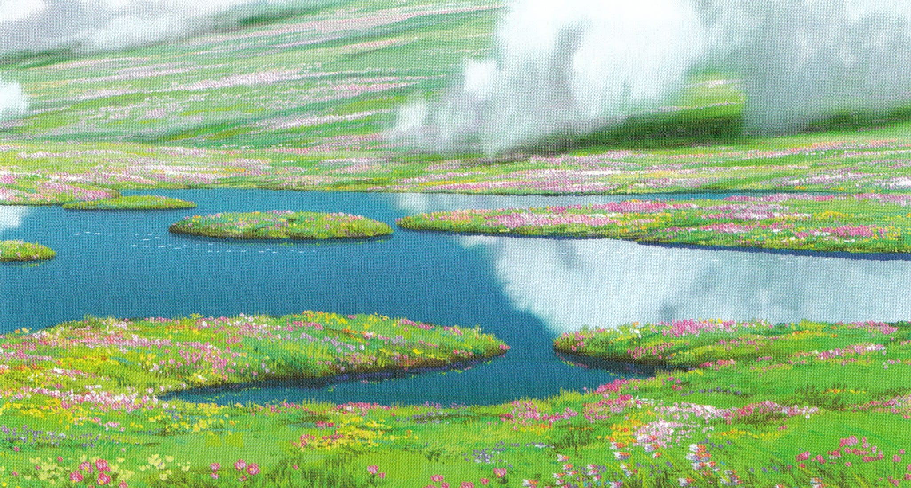
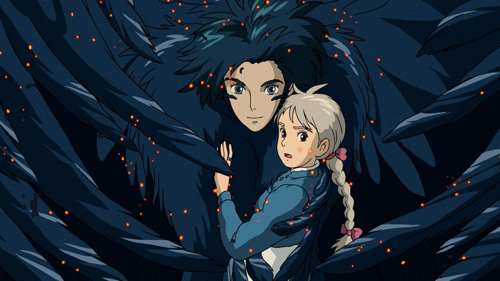
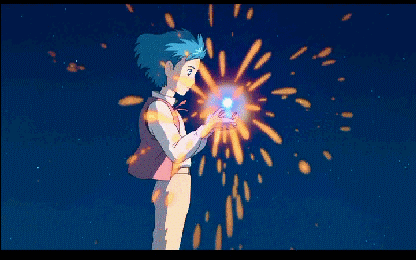

Howl's Moving Castle
במאי: האייאו מיאזאקי
ז'אנר: פנטזיה
דעתי:
"סרט אנימציה מהילדות שלי. ראיתי אותו עשרות פעמים. יפה, מרגש, מרתק.
וכמובן, הגיבור הראשי בלב שלי לתמיד."
Howl's Moving Castle (ביפנית: ハウルの動く城, הפבורן: Hauru no Ugoku Shiro) הוא סרט אנימציה יפני משנת 2004 שנכתב וביים על ידי Hayao Miyazaki. הוא מבוסס באופן רופף על הרומן באותו שם משנת 1986 מאת הסופרת הבריטית דיאנה ווין ג'ונס. הסרט ה ופק על ידי טושיו סוזוקי, מונפש על ידי סטודיו ג'יבלי והופץ על ידי טוהו. צוות הקול היפני כלל את צ'יקו באישו וטאקויה קימ ורה, בעוד בגרסת הדיבוב האנגלית כיכבו ג'ין סימונס, אמילי מורטימר, לורן באקול, כריסטיאן בייל, ג'וש האצ'רסון ובילי קריסטל.
הסרט מתרחש בממלכה בדיונית שבה רווחות גם קסם וגם טכנולוגיה של תחילת המאה העשרים, על רקע מלחמה עם ממלכה אחרת. הוא מספר את ס יפורה של סופי, כובסת צעירה שהופכת לאישה מבוגרת על ידי מכשפה שנכנסת לחנות שלה ומקללת אותה. היא נתקלת בקוסם בשם Howl ונקלעת להתנגדות שלו להילחם עבור המלך.
בסרט הזה, יש פסקול יפהפה שאני מאוד אוהב ורוצה לחלוק איתכם. המוזיקה מוסיפה עומק ורגש לסצנות, ומעצ ימה את החוויה הכוללת של הסרט. ממנגינות קסומות ועד קטעים תזמורתיים רבי עוצמה, הפסקול של הטירה הנעה של Howl הוא באמת שובה לב.
Merry-Go-Round of Life (from “Howl’s Moving Castle”)
אמן: Joe Hisaishi
עלילה
לסופי יש חיים חסרי אירועים בחנות הכובעים של אביה המנוח, אבל כל זה משתנה כשהיא מתיידדת עם הקוסם Howl, שחי בטירה מעופפת קסומה. עם זאת, המכשפה המרושעת של פסולת מתחבטת בזוגיות המתהווה שלהם ומטילה כישוף על סופי הצעירה, שמזדקנת אותה בטרם עת. כעת, על Howl להשתמש בכל כישרונותיו הקסומים כדי להילחם בחבר הקנאי ולהחזיר את סופי לצעירותה וליופייה לשעבר.
סצנות מהסרט - ספוילרים!
- 
- 
- 